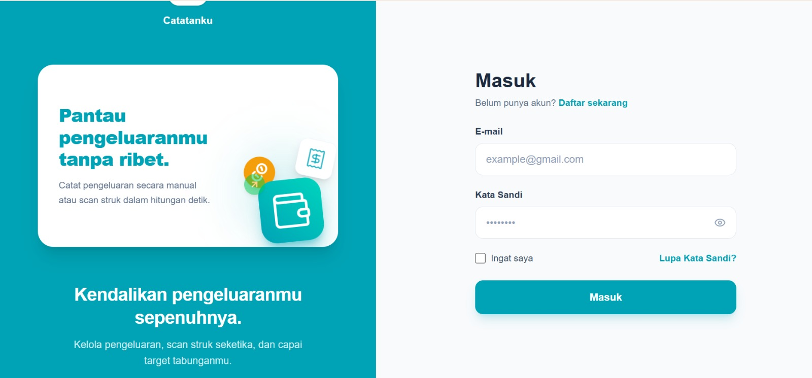

an Informatics Engineering student who enjoys exploring Artificial Intelligence, Machine Learning and Data Analytics. I'm always looking for opportunities to learn and improve. I enjoy turning what I learn into real projects. This portfolio is a collection of the projects I've built and the skills I'm continuously developing.
Available for
Internship 🚀
Built LSTM-based models for Indonesian text classification and an OCR pipeline to extract financial data from receipt images.
Deployed ML models as REST APIs using FastAPI on Hugging Face Spaces, integrated into production apps used by real users.
Performed EDA, data preprocessing, and feature engineering to prepare high-quality datasets — including handling class imbalance for production ML models.
A project that highlights my technical skills.

⭐ FeaturedDeployed NLP classification system for Indonesian financial transactions — LSTM + custom Attention Layer trained on 37K records across 9 imbalanced categories (class weights applied), achieving 97% validation accuracy. Served via FastAPI on Hugging Face Spaces, integrated into team's Next.js production app deployed on Vercel.
Politeknik Negeri Batam
Focusing on Artificial Intelligence, Machine Learning, and Web Development. Currently preparing a final-year project involving machine learning for personal finance applications.
AI/ML Engineer · Team of 6
Developed an Indonesian NLP classification model and OCR pipeline, deployed the FastAPI backend on Hugging Face Spaces, and integrated it into the team's production-ready Next.js application.
Self-paced Online Program
Completed end-to-end machine learning training covering data preprocessing, exploratory data analysis, feature engineering, and image classification